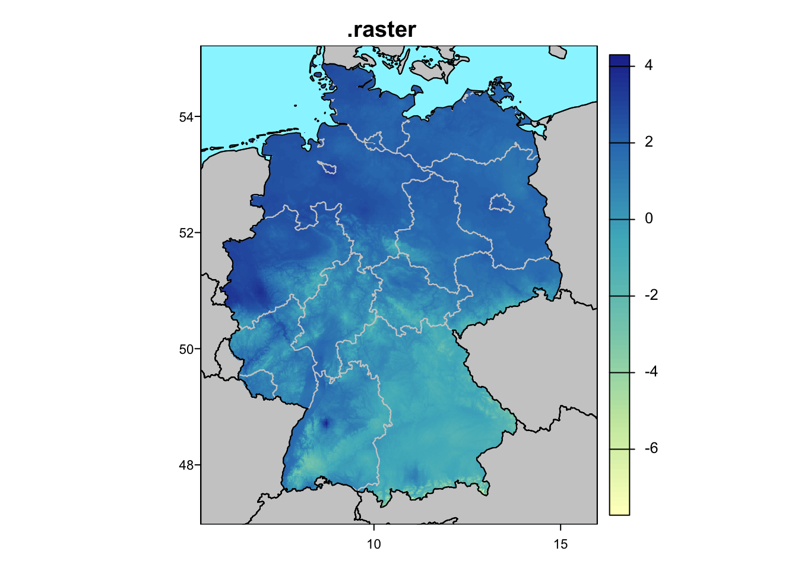
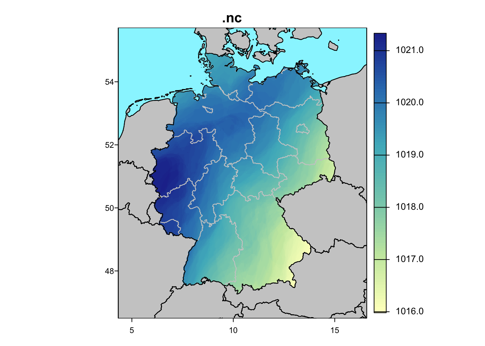
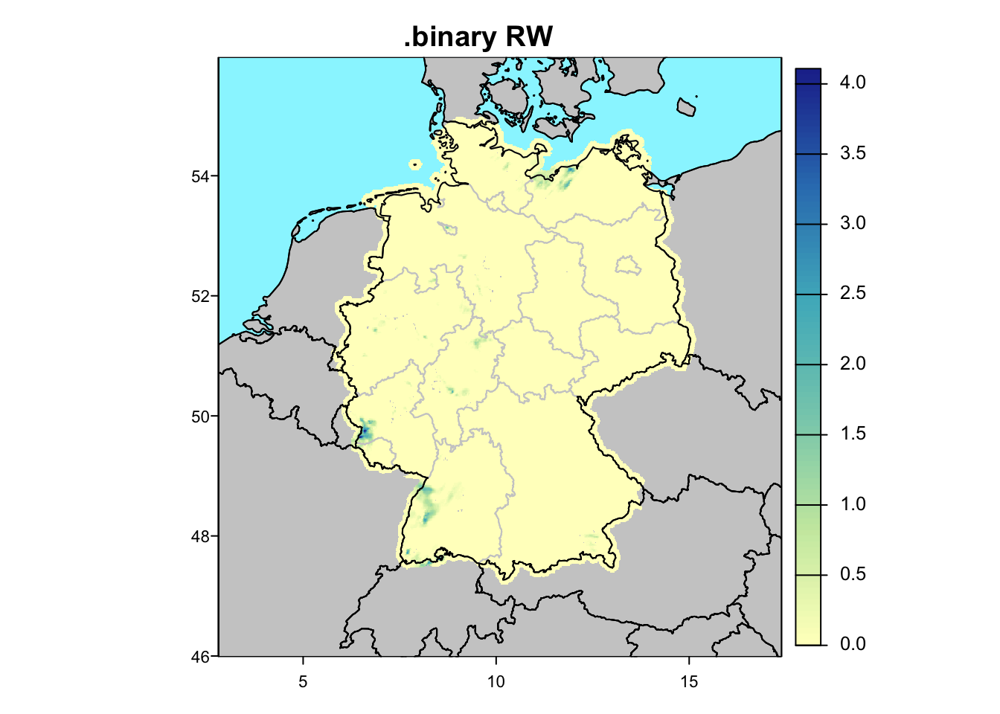
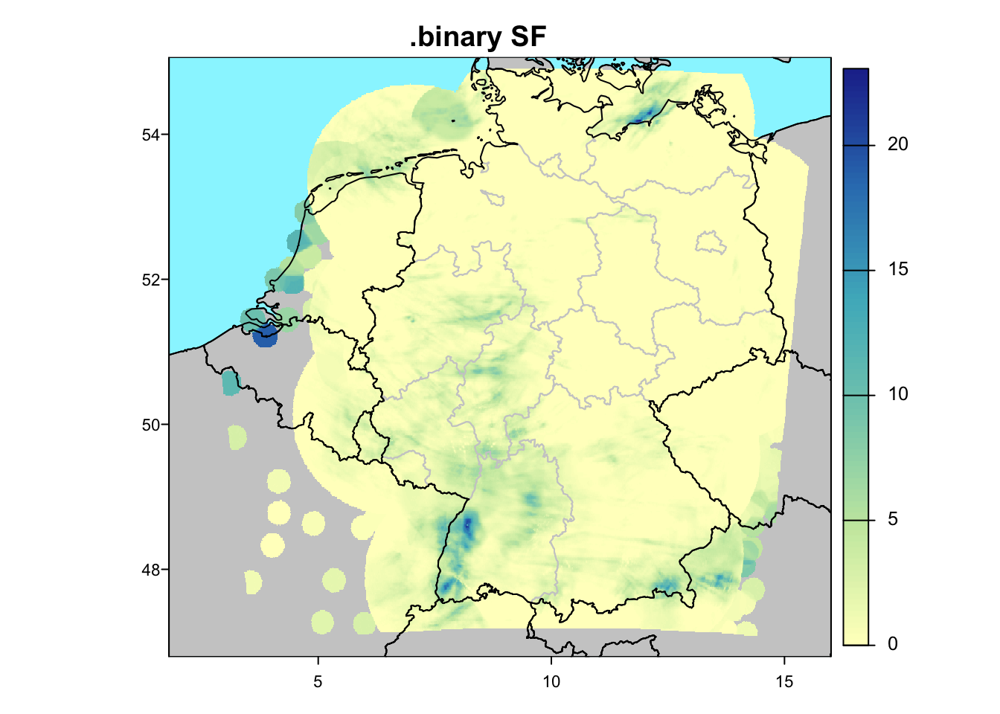
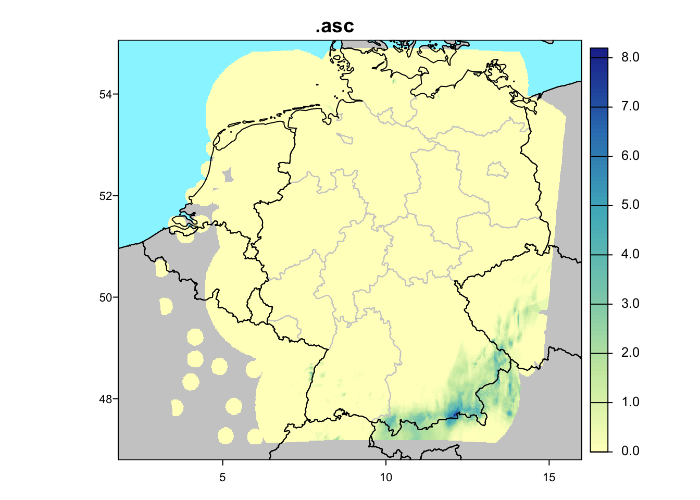
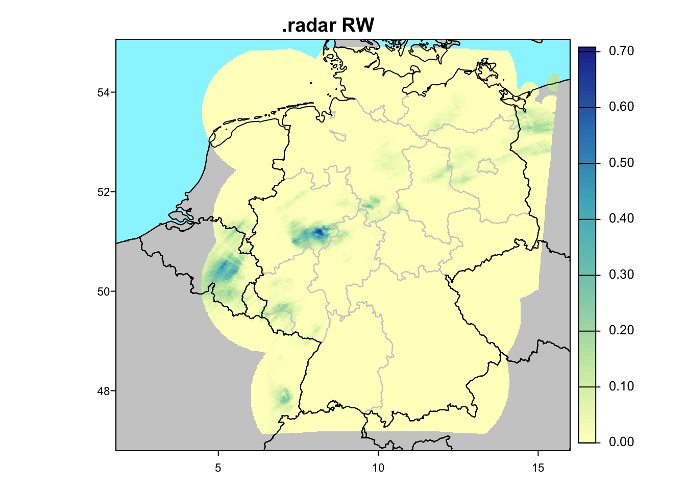
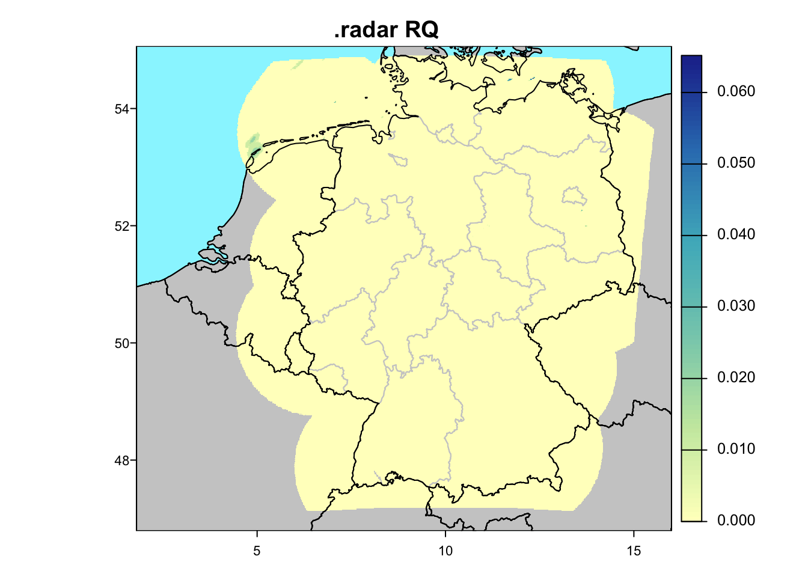
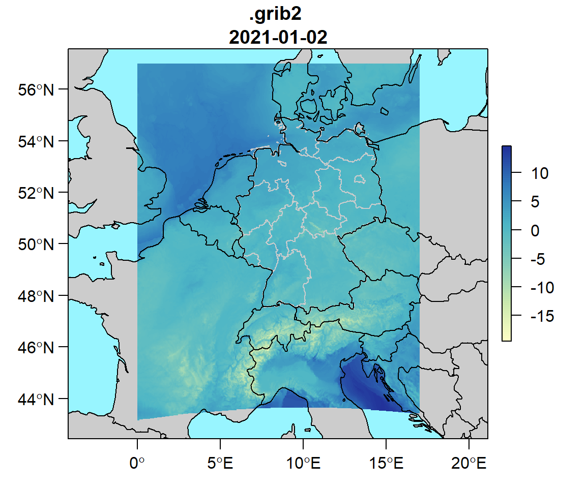
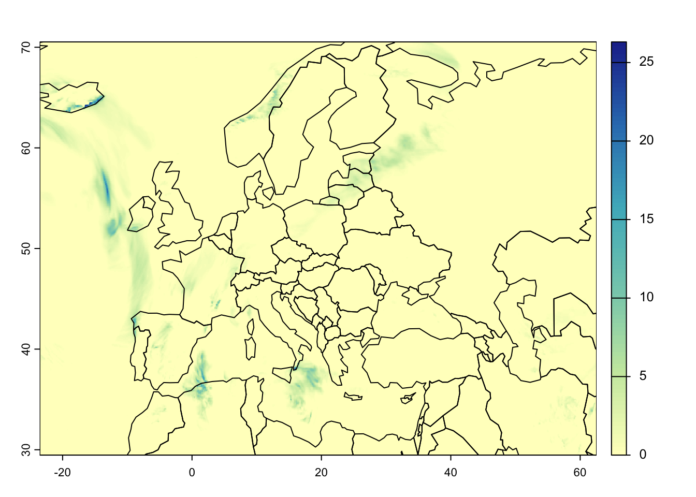
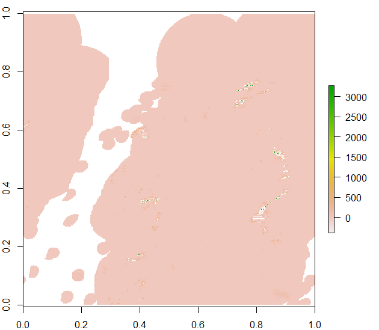

8 Raster data
For observational data at dwdbase,
selectDWD is the main function to choose data to be downloaded.
For gridded data at gridbase, including
data interpolated onto a 1 km raster and radar data up to the last hour,
I don’t yet understand the structure of the FTP server as well.
For now, you’ll have to query gridIndex yourself, e.g. with
data(gridIndex)
head(grep("historical", gridIndex, value=TRUE))
# currently available files in a given folder:
rasterbase <- paste0(gridbase,"/seasonal/air_temperature_mean")
ftp.files <- indexFTP("/16_DJF", base=rasterbase, dir=tempdir())
# current index of all grid files (takes > 2 min, yields >30k charstrings >5MB):
gridIndexNow <- indexFTP(base=gridbase, filename="grids")If you send me examples of how you use it, I can then expand this in rdwd.
For files that are not yet read correctly, you can also consult the
Kompositformatbeschreibung at https://www.dwd.de/DE/leistungen/radolan/radolan.html
Besides at dwdbase and gridbase,
there’s yet more data at https://opendata.dwd.de/weather.
Before running the code below, update the package:
The following overview will usually unzip only a few selected files for speed and memory considerations.
In real life, you probably do not want to unzip to a temporary exdir.
You can also remove read=FALSE in dataDWD and add the needed arguments right there,
but I wanted to be explicit here.
The first line in each code block below shows for which FTP folder
at gridbase
this function will be called.
The last line shows what projection and extent to use in plotRadar.
8.1 readDWD.raster
readDWD.raster - for actual code, see use case: monthly gridded data
link <- "seasonal/air_temperature_mean/16_DJF/grids_germany_seasonal_air_temp_mean_188216.asc.gz" # 0.2 MB
file <- dataDWD(link, base=gridbase, joinbf=TRUE, read=FALSE)
rad <- readDWD(file) # with dividebyten=TRUE
rad <- readDWD(file) # runs faster at second time due to skip=TRUE
plotRadar(rad, main=".raster", proj="seasonal", extent=NULL)
8.2 readDWD.nc
link <- "daily/Project_TRY/pressure/PRED_199606_daymean.nc.gz" # 5 MB
file <- dataDWD(link, base=gridbase, joinbf=TRUE, read=FALSE, force=T)
rad <- readDWD(file) # can also have interactive selection of variable
plotRadar(rad, main=".nc", proj="nc", extent="nc", layer=1)
8.3 readDWD.binary (RW)
readDWD.binary - see also use case: recent hourly radar files
link <- "hourly/radolan/reproc/2017_002/bin/2017/RW2017.002_201712.tar.gz" # 25 MB
file <- dataDWD(link, base=gridbase, joinbf=TRUE, read=FALSE)
rad <- readDWD(file, exdir=tempdir(), selection=1:3)
plotRadar(rad$dat, main=".binary RW", extent="rw", layer=1)
8.4 readDWD.binary (SF)
link <- "/daily/radolan/historical/bin/2017/SF201712.tar.gz" # 204 MB
file <- dataDWD(link, base=gridbase, joinbf=TRUE, read=FALSE)
rad <- readDWD(file, exdir=tempdir(), selection=1:3) # with toraster=TRUE
plotRadar(rad$dat, main=".binary SF", layer=1)
8.5 readDWD.asc
link <- "hourly/radolan/historical/asc/2018/RW-201809.tar" # 25 mB
file <- dataDWD(link, base=gridbase, joinbf=TRUE, read=FALSE) # dbin -> mode=wb
rad <- readDWD(file, selection=1:3, dividebyten=TRUE)
plotRadar(rad, main=".asc", layer=1)
8.6 readDWD.radar (RW)
readDWD.radar - for actual code for daily data, see use case: daily radar files
links <- indexFTP("hourly/radolan/recent/bin", base=gridbase, dir=tempdir()) # 0.04 MB
file <- dataDWD(links[773], base=gridbase, joinbf=TRUE, dir=tempdir(), read=FALSE)
rad <- readDWD(file)
plotRadar(rad$dat, main=".radar RW")
8.7 readDWD.radar (RQ)
rqbase <- "ftp://opendata.dwd.de/weather/radar/radvor/rq"
links <- indexFTP("", base=rqbase, dir=tempdir()) # 0.07 MB
file <- dataDWD(links[17], base=rqbase, joinbf=TRUE, dir=tempdir(), read=FALSE)
rad <- readDWD(file)
plotRadar(rad$dat, main=".radar RQ")
8.8 readDWD.grib2
nwpbase <- "ftp://opendata.dwd.de/weather/nwp/icon-d2/grib/00/t_2m"
links <- indexFTP("", base=nwpbase, dir=tempdir())
file <- dataDWD(links[6], base=nwpbase, joinbf=TRUE, dir=tempdir(), read=FALSE)
#forecast <- readDWD(file)
#plotRadar(forecast, main=".grib2", project=FALSE)grib files are currently broken (2021-04-08) but would look like this:

8.9 icon-eu
forecasts for europe also work with readDWD.grib2:
nwpbase <- "ftp://opendata.dwd.de/weather/nwp/icon-eu/grib/06/rain_gsp/"
links <- indexFTP("", base=nwpbase, dir=tempdir())
file <- dataDWD(links[6], base=nwpbase, joinbf=TRUE, dir=tempdir(), read=FALSE)
forecast <- readDWD(file)
terra::plot(forecast, col=berryFunctions::seqPal())
terra::plot(terra::vect(rnaturalearth::ne_countries()), add=TRUE)
8.10 binary file errors
Binary files must be downloaded by download.file with wb=TRUE (at least on Windows, due to CRLF issues).
download.file will automatically do that for some file endings (like .gz, .zip).
For others (e.g. .tar files in readDWD.asc
or files at weather/radar/radolan),
dataDWD has a dbin=TRUE option.
Since Version 1.4.18 (2021-04-08), the default is dbin=TRUE. Report errors here if needed.
If you do not use this, your plots may look partially shifted like this and have the wrong units (image from 2020-06-16 21:30 CEST):
url <- "ftp://opendata.dwd.de/weather/radar/radolan/rw/raa01-rw_10000-latest-dwd---bin"
rw_file <- dataDWD(url, read=FALSE, dbin=FALSE)
rw_orig <- dwdradar::readRadarFile(rw_file)
terra::plot(terra::rast(rw_orig$dat))